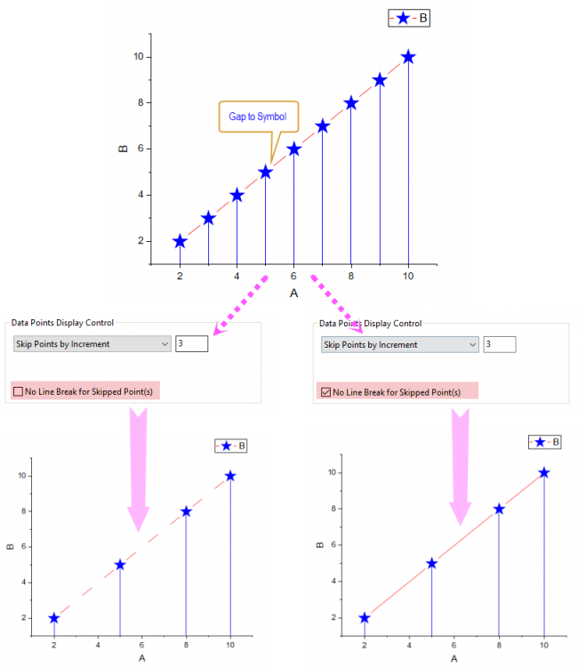

Die Bedienelemente auf der Registerkarte Anzeige auf Zeichnungsebene ist nur verfügbar für allgemeine 2D-Diagramme oder 3D-XYY-Balkendiagramme im kartesischen Koordinatensystem.
Da Origin doppelte Y-Achsen in 2D-Diagrammen und doppelte YZ-Achsen in 3D-Diagrammen unterstützt, können Sie diese Option verwenden, um festzulegen, auf welcher Achse die aktuelle Zeichnung basiert.
Bei 2D-Diagrammen und 3D-XYY/XYZ-Diagrammen werden alle Zeichnungen standardmäßig auf der linken YZ-Achse gezeichnet (ausschließlich der Zeichnungen, die über spezifische Vorlagen gezeichnet wurden). Sie können diese Option verwenden, um zu entscheiden, auf welcher YZ-Achse die aktuelle Zeichnung gezeichnet werden soll. Wenn zum Beispiel die Rechte YZ-Achse ausgewählt ist, wird die aktuelle Zeichnung auf der rechten YZ-Achse gezeichnet und die Achsenskalierung automatisch angepasst, um den gesamten Datenbereich einzuschließen, und umgekehrt.
Hinweis: Wenn Sie gestapelte 2D- und 3D-Balkendiagramme mit Untergruppierung nach Achse zeichnen möchten, aktivieren Sie die Option Versatz innerhalb der Untergruppierung (auf Registerkarte Gruppe) für kumulative/inkrementelle Daten verwenden und setzen Sie Untergruppierung auf Nach Achse und verwenden Sie dann Daten zeichnen auf, um für jedes Balkendiagramm unterschiedliche Achsen festzulegen.
Wenn Sie ein 2D- oder 3D-YY-Balken-/Säulendiagramm erstellt haben, wird dieses Kontrollkästchen standardmäßig aktiviert. Sie können dieses Kontrollkästchen verwenden, um die Balkenanzeige in der Grafik auszuschalten.
Legen Sie fest, ob Symbole oben in der Mitte der 2D-/3D-Balken/-Säulen gezeigt werden.
Legen Sie fest, ob die Verbindungslinien, die die Mittelpunkte der Balken in einer Zeichnung verbinden, gezeigt werden. Wenn Sie dieses Kontrollkästchen aktiviert haben, wird die Registerkarte Linie gezeigt, auf der Sie die nachfolgenden Einstellungen des Linienstils vornehmen können.
Bei 2D-Balkendiagrammen folgt die Farbe der Verbindungslinie per Standard automatisch der Rahmenfarbe der Balken.
Bei 3D-XYY-Balkendiagrammen folgt die Farbe der Verbindungslinie per Standard automatisch der Musterfüllung der 3D-Balken.
Wenn es Teildatensätze in Ihrem 2D-Balkendiagramm gibt, ist auf der Registerkarte Linie das Kontrollkästchen Innerhalb des Teildatensatzes verbinden standardmäßig aktiviert, um Verbindungslinien innerhalb des Teildatensatzes hinzuzufügen.
Beispieldiagramme:
_Display2_Tab/450px-The__28Plot_Details_29_Display2_Tab_02.png)
Legen Sie fest, ob Ankerlinien von den Mittelpunkten oberhalb der Balken bis zur unteren Achse bzw. zum unteren Feld hinzugefügt werden. Wenn Sie Ankerlinien für die Balken hinzugefügt haben, wird die Registerkarte Ankerlinien gezeigt, damit Sie die Ankerlinien benutzerdefiniert anpassen können.
Legen Sie fest, ob die Projektion des 3D-XYY-Balkens auf XZ-Ebene und die Position (Y=) des Projektionsbalkens gezeigt werden sollen. Per Standard ist Auto ausgewählt, das heißt, die Projektionsbalken werden bei Y = Achsenanfang gezeichnet.
Hinweis: In diesen Beispiel beginnt der 3D-Balken bei Y = -1500, so dass die Projektionsbalken in der XZ-Ebene ebenfalls bei Z = -1500 beginnen. Die XY-Ebene, in der die Projektionsbalken sind, befindet sich bei der Position Y= .
Legen Sie fest, ob und wie Datenpunkte übersprungen werden.
Alle Datenpunkte werden gezeigt, ohne dass Punkte übersprungen werden. Dies ist die Standardauswahl für diese Elementgruppe.
Wählen Sie Punkte nach Inkrement überspringen in der Auswahlliste, um eine festgelegte Häufigkeit von Datenpunkten anzuzeigen. Geben Sie dann die Häufigkeit in das zugehörige Textfeld ein. Diese Einstellung beeinflusst auch die Anzeige von Ankerlinien, Symbolen, Fehlerbalken und Datenbeschriftungen der Zeichnungen. Bei einem Vektordiagramm werden die Vektoren auch verborgen, wenn Streupunkte übersprungen werden. Bei der Projektion eines 3D-Punktdiagramms werden die Optionen zum Überspringen von Punkten verborgen und die Projektion überspringt Punkte, indem sie den folgenden Einstellungen der ursprünglichen Zeichnung folgt.
Wenn n in das Textfeld Punkte auslassen eingegeben wird, dann wird nur der erste von je n Datenpunkten angezeigt; die restlichen n-1 Datenpunkte werden übersprungen. Der letzte Datenpunkt jedoch wird immer gezeigt. Wenn Sie den letzten Punkt verbergen möchten, setzen Sie @SMEP = 0. n muss ein ganzzahliger Wert größer oder gleich 2 sein. Wenn n = 0 oder 1 ist, wird kein Punkt übersprungen.
Falls Abstand zu Symbol für ein Punkte-Liniendiagramm aktiviert ist, können Sie über das Kontrollkästchen Keine Linienunterbrechung für übersprungene Punkte bestimmen, die Linie unterbrochen wird, wenn Punkte übersprungen werden. Wenn dieses Kontrollkästchen aktiviert ist, ist die Linie weiterhin kontinuierlich, auch wenn die Datenpunkte ausgelassen werden. 
Wählen Sie eine der Optionen des Intelligenten Überspringens, um die Datenpunkte mit einer Berechnung zu überspringen, die auf der Datendichte und der Kurvenform basiert. Diese Einstellung beeinflusst auch die Anzeige von Ankerlinien, Symbolen, Fehlerbalken und Datenbeschriftungen der Zeichnungen.
Intelligentes Überspringen der Datenpunkte durch Festlegen der insgesamt nach dem Überspringen beibehaltenen Datenpunkte.
Intelligentes Überspringen der Datenpunkte durch Festlegen, wie viele Datenpunkte mit einem Prozentanteil aller Datenpunkte übersprungen werden.
Basierend auf den verschiedenen Kurvenformen und Datendichten, stehen vier Methoden zum Überspringen von Datenpunkten zur Verfügung:
Folgen Sie diesem Algorithmus, um Schritt für Schritt zu suchen. Es wird jedes Mal nur der Punkt mit der größten dreieckigen Fläche (zwischen dem Dreieck mit der aktuell größeren Fläche und dem Dreieck mit der kleineren Fläche auf höherer Ebene) behalten, bis die festgesetzte Anzahl von Punkten erreicht wird.